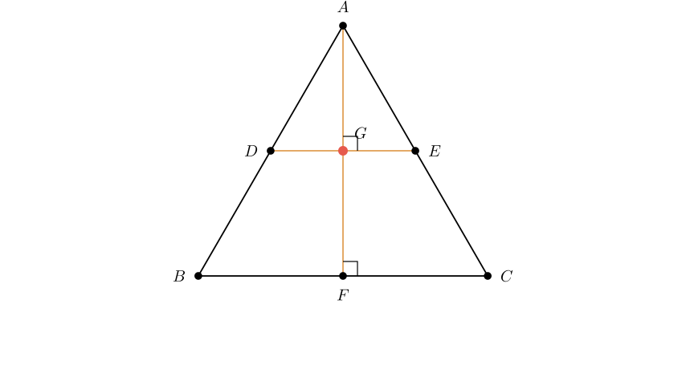
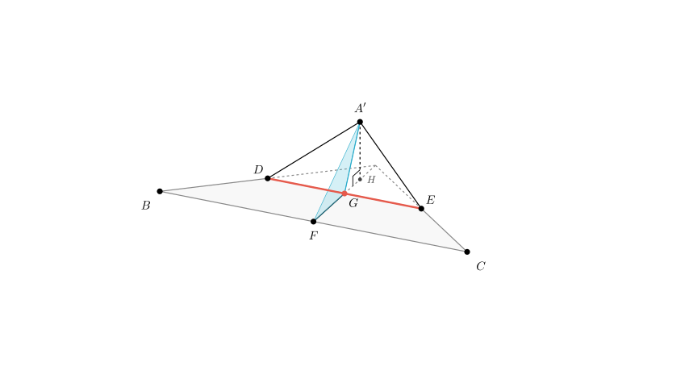
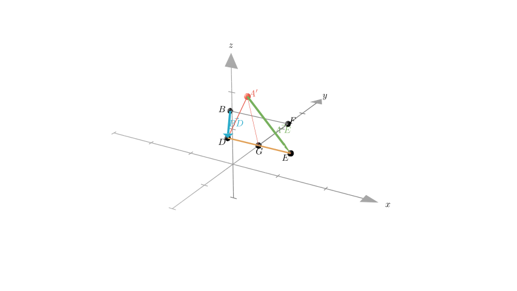

Problem Statement: As shown in the figure, in an equilateral triangle $ABC$ with side length $a$, the median $AF$ and the mid-segment $DE$ intersect at $G$. Triangle $A'ED$ is a figure formed by rotating $\triangle AED$ about the axis $DE$. Given the following propositions, which ones are correct? (Fill in the numbers of all correct propositions)
(1) The projection of the moving point $A'$ onto the plane $ABC$ lies on the line segment $AF$. (2) The volume of the tetrahedron $A'-FED$ has a maximum value. (3) The plane $A'GF$ is always perpendicular to the plane $BCED$. (4) The skew lines $A'E$ and $BD$ can never be perpendicular.
Solution Approach: We will analyze the geometric properties of the figure before and after rotation. 1. Analyze the geometry: Establish the relationships between lines and planes, particularly orthogonality, given that $\triangle ABC$ is equilateral and $DE$ is a mid-segment. 2. Evaluate Proposition (1) & (3): Use theorems regarding perpendicular planes and lines to determine the locus of the projection of $A'$ and the relationship between plane $A'GF$ and the base plane. 3. Evaluate Proposition (2): Analyze the volume formula for the tetrahedron $A'-FED$ to see if it is bounded. 4. Evaluate Proposition (4): Use vector geometry or coordinate geometry to check if the dot product of the direction vectors of lines $A'E$ and $BD$ can be zero.

Step 1: Analyzing the Geometry (Propositions 1 & 3)
Let's look at the properties of the base figure: * Since $\triangle ABC$ is equilateral and $F$ is the midpoint of $BC$, $AF$ is the altitude. Thus, $AF \perp BC$. * $D$ and $E$ are midpoints of $AB$ and $AC$, so $DE$ is the mid-segment parallel to $BC$. * Because $AF \perp BC$ and $DE \parallel BC$, it follows that $AF \perp DE$. * The intersection $G$ divides $AF$. In the rotation, $\triangle AED$ rotates about $DE$. The point $A$ moves to position $A'$. * Since $AG \perp DE$ in the original triangle, the line segment $A'G$ remains perpendicular to the axis of rotation $DE$ throughout the movement. * Similarly, $FG \perp DE$ in the base plane.
Proof for Proposition (3): * We have established that $DE \perp A'G$ and $DE \perp FG$. * Since $A'G$ and $FG$ intersect at $G$ and define the plane $A'GF$, the line $DE$ is perpendicular to the plane $A'GF$. * Since the line $DE$ lies within the plane $BCED$ (the plane of the original triangle base), and $DE$ is perpendicular to plane $A'GF$, the two planes must be perpendicular. * Conclusion: Plane $A'GF \perp$ Plane $BCED$ is always true. (3) is Correct.
Proof for Proposition (1): * Since Plane $A'GF \perp$ Plane $BCED$, the projection of any point in Plane $A'GF$ onto Plane $BCED$ must lie on the intersection of these two planes. * The intersection of these planes is the line containing $F$ and $G$ (line $AF$). * Since $A'$ lies in Plane $A'GF$, its projection onto the base plane must lie on the line $AF$. * Conclusion: The projection of $A'$ lies on segment $AF$. (1) is Correct.

Step 2: Analyzing Volume (Proposition 2)
We need to determine if the volume of the tetrahedron (triangular pyramid) $A'-FED$ has a maximum value.

Step 3: Analyzing Skew Lines (Proposition 4)
We need to check if lines $A'E$ and $BD$ can be perpendicular. We will use a coordinate system centered at $G$.
$B$ can be found relative to $F$. Since $F$ is the midpoint of $BC$ and $BC \parallel DE$ with length $a$: $B = (-a/2, \frac{a\sqrt{3}}{4}, 0)$.
Define Rotating Point $A'$:
When rotated by angle $\theta$ about the $x$-axis ($DE$), the coordinates of $A'$ become: $A' = (0, -\frac{a\sqrt{3}}{4}\cos\theta, \frac{a\sqrt{3}}{4}\sin\theta)$.
Calculate Vectors:
$\vec{A'E} = E - A' = (a/4 - 0, 0 - (-\frac{a\sqrt{3}}{4}\cos\theta), 0 - \frac{a\sqrt{3}}{4}\sin\theta) = (\frac{a}{4}, \frac{a\sqrt{3}}{4}\cos\theta, -\frac{a\sqrt{3}}{4}\sin\theta)$.
Check Perpendicularity (Dot Product):
For the lines to be perpendicular, the dot product must be zero: $1 - 3\cos\theta = 0 \implies \cos\theta = \frac{1}{3}$.
Since $\cos\theta = 1/3$ corresponds to a real angle $\theta$ (approximately $70.5^\circ$), it is possible for the lines to be perpendicular.
Final Conclusion
Based on the step-by-step analysis: (1) The projection of $A'$ is on $AF$: Correct (2) The volume has a maximum: Correct (3) Plane $A'GF \perp$ Plane $BCED$: Correct (4) $A'E$ and $BD$ cannot be perpendicular: Incorrect (They are perpendicular when $\cos\theta = 1/3$)
Correct propositions: (1), (2), (3).